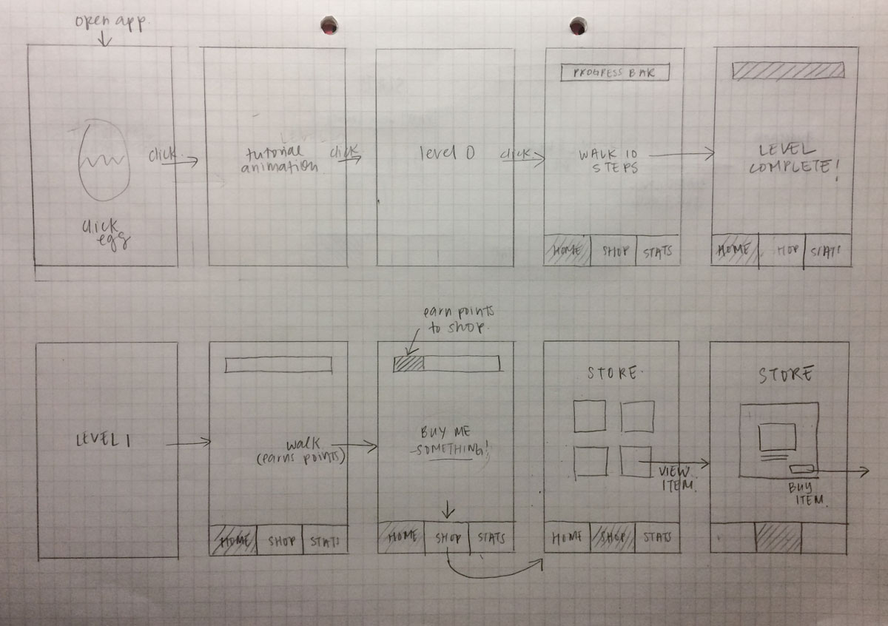

Fastback Studios
My Role
Survey, personas, wireframe, prototyping, user testing, visual design
Process
Surveys, interviews, competitive analysis, alignment personas, content audit, wireframe, prototyping, usability testing, visual design
Tools
Business goals
We interviewed our stakeholder to understand any frustrations from his perspective and what his business goals were. image here
UX Strategy
Based on our research and stakeholder interview, we created a UX strategy to meet the stakeholder's business goals using human-centered design.
1. CONTENT
Different user groups need the right content help them learn more about the studio owner and decide if they want to work with him.
2. USABILITY
Better usability would mean less potential clients lost due to the inability to use the website to find contact information or rates.
3. VISUAL DESIGN
Visual design affects the studio's brand image. Creating the right visual brand would attract and invite more clients leading to more inquiries.
1. Content
We performed a content audit to make sure that existing content would be relevant to our user groups.
User groups
We identified four main user groups that would use the website. This would help us decide whether the existing content was relevant and in the right format.IMAGE HERE
Alignment Personas
After identifying the major user groups, we used a tool called alignment personas to make sure the website had content that would cater to these user groups. We brainstormed new content that could deliver the right messages to each user group. IMAGE HERE
2.Usability
Through our interviews and user testing, we identified 5 major usability issues with the existing website.IMAGE HERE
INFORMATION ARCHITECTURE
After we brainstormed new content, we conducted a card sort to figure out how to structure the website so that users can quickly find the information they are looking for.IMAGE HERE
Wireframe and Usability Testing
With our new IA, we designed a wireframe that followed our new content structure and fixed the existing usability issues. We used the wireframe to create a prototype for usability testing. IMAGE HERE
3. Visual Design
For our high fidelity design, we iterated on our wireframe and created a visual style. Fastback studio is inclusive, with the goal of attracting artists that desire to work with the studio owner for his unique production talent. We designed 4 visual concepts and decided on a direction that has artistic personality, yet is down-to-earth and inviting to people of all experience levels, backgrounds, and genres.
High Fidelity Designs
When you open My Gudetama, you are greeted by the lazy egg, who shows you a tutorial.

Walk 10 steps to complete the tutorial.

After the tutorial, begin level 1 and start walking. Once you have enough coins, you can buy a bacon for your Gudetama.
What I learned
I gained new understanding of what specific motivations and desires could change behavior. I also learned how to analyze and translate user activity data into a quantitative system to create a fair reward system.
Further Development
Further work on this app would require a better management system for users to own and use these goodies.